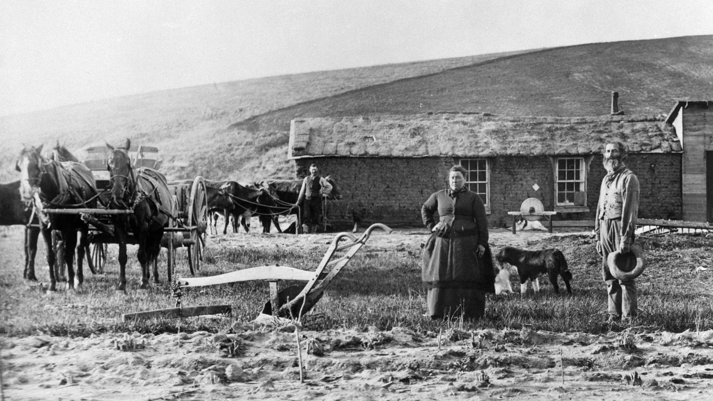
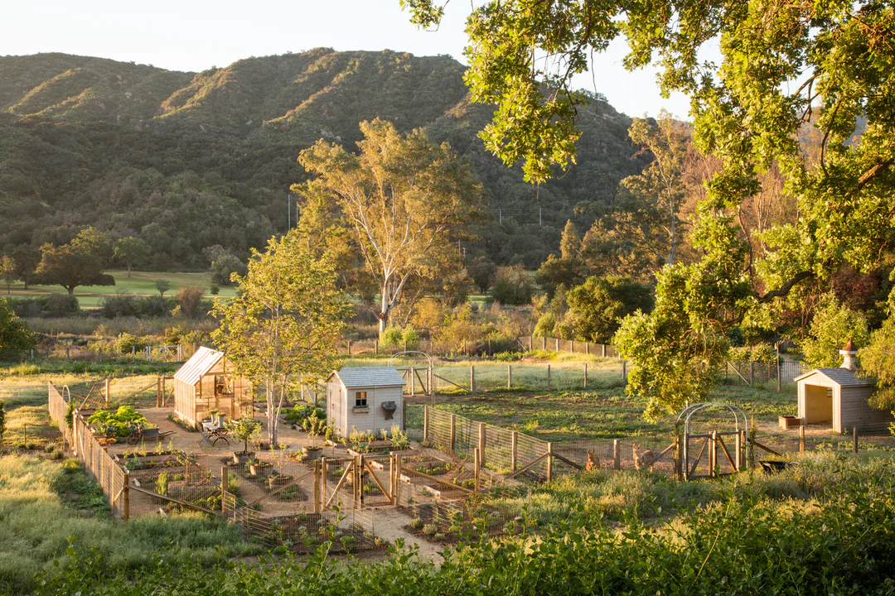

What is Homesteading?
Homestead History
Homesteading is a lifestyle of self-sufficiency. The traditional definition of homesteading is "working the land and producing everything you need," although the modern definition is much broader. Homesteaders grow their own food, perserve it, and often times produce other goods for their own use or sale. This practice is an important part of American history and agriculture. The homestead act of 1862, is one of the most important legislation adopted by Congress. The acts were several laws, in the United States, where 270 million acres were distriputed amoung the public. The homestead movement promoted the free ownership of land in the Midwest, Great Plains, and the West by people willing to settle on and cultivate it.
Modern Homesteading
As previously mentioned the word "Homestead" in the modern world is much more broad. Even still, there are plently of people out their working the land everyday to provide for themselves and their families. If starting a homestead is your dream, like it is mine, then walk with me to learn more about this lifestyle.